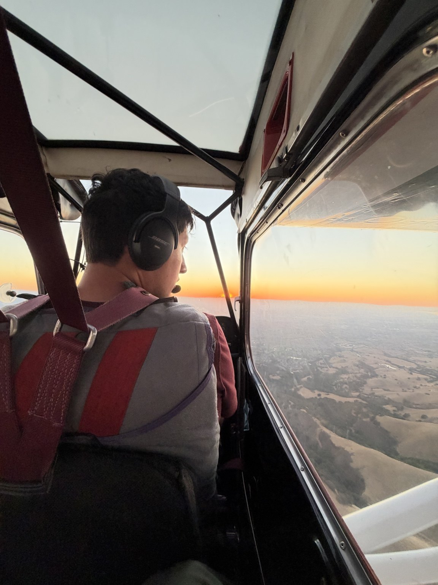

Private Pilot
Develop the fundamentals of aircraft control, decision-making, and safe operations from day one.
Learn more ↗
Certified Flight Instructor · Instrument Rated · AGI/IGI · Tailwheel · Aerobatics
 SAN FRANCISCO BAY AREA / FROM ABOVE
SAN FRANCISCO BAY AREA / FROM ABOVE
I’m a Bay Area pilot drawn to the challenge of flying well and the opportunity to help others grow. I believe great training comes from preparation, curiosity, and taking pride in steady improvement.
This site is a place to learn about my approach to flight instruction, explore training options, and find useful resources for your own flying.
The process comes first.
We build skills to standard, keep challenging them in a positive way, and let confidence grow from consistent progress. A checkride matters, but becoming a capable, thoughtful pilot matters more.
Every flight has a purpose. We'll build each skill to standard, reinforce it through positive challenges, and take pride in the progress along the way.
Develop the fundamentals of aircraft control, decision-making, and safe operations from day one.
Learn more ↗Refine aircraft handling, planning, and precision with an emphasis on professional standards.
Learn more ↗Strengthen proficiency, refresh critical knowledge, and build a targeted plan for improvement.
Learn more ↗A checkride matters, but it isn't the whole point. My approach is to focus on what's in front of us: prepare well, understand the why, practice with intention, and keep raising the bar as confidence grows. When you build real proficiency, the result takes care of itself.
More about my approach ↗“The goal isn't just to pass a checkride. It's to walk away a more capable, confident pilot — and someone who's learned to take pride in the process.”
The best progress doesn't happen only in the airplane. Find FAA references and practical study materials to build your understanding between lessons.